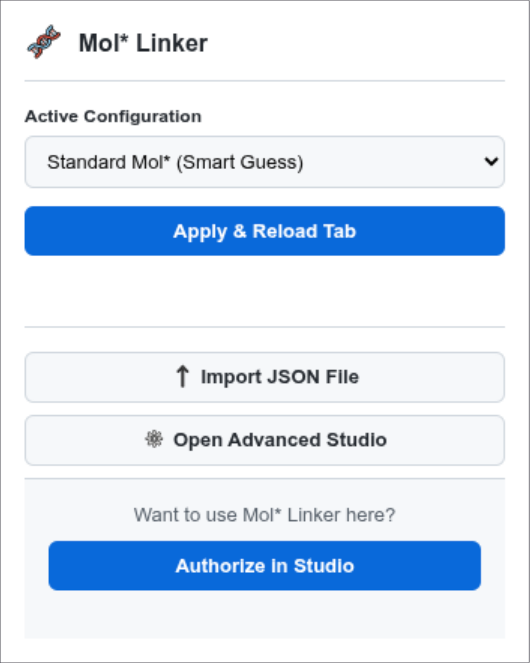
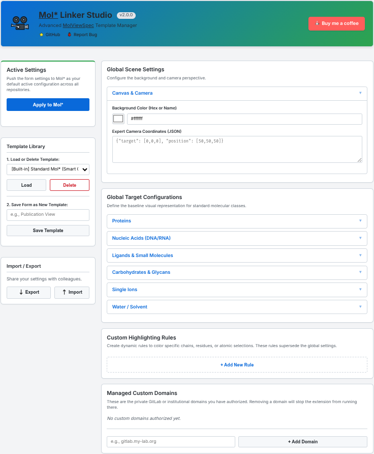

Mol* Linker is a powerful browser extension for
structural biologists, bioinformaticians, and developers. It instantly
injects Mol* (Mol*) viewing capabilities directly into GitHub and
GitLab, powered by the MolViewSpec (MVS) architecture.
Mol* Linker Demo
Features
Native Integration: Automatically detects
.pdb, .cif, .mmcif, and
.gro files on GitHub and GitLab and injects a 1-click Mol*
viewing badge.
Mol* Linker Studio: A fully-featured Options
dashboard to configure default representations, colors, and sizes for
proteins, nucleic acids, ligands, and ions.
Turing-Complete Rule Engine: Create dynamic
highlighting rules to target specific chains, residue ranges, or
atoms.
Cinematic Control: Inject custom camera
coordinates, background canvas colors, hovering tooltips, and floating
labels directly into the Mol* scene.
Exportable Templates: Save your lab’s preferred
viewing configurations as .json files and share them with
colleagues.
Cross-Browser: Built on Manifest V3, fully
compatible with Google Chrome, Microsoft Edge, Brave, and Mozilla
Firefox.
Installation
Chrome / Edge / Brave
Visit the [Chrome Web Store link] (Note: Add link after
publishing).
Clone this repository:
git clone https://github.com/MartinBaGar/molstar_linker.git
or simply grab the latest
release.
Chrome: Go to chrome://extensions/,
enable Developer mode, and click Load
unpacked. Select the cloned folder.
Firefox: Go to
about:debugging#/runtime/this-firefox, click Load
Temporary Add-on, and select the manifest.json
file.
Usage Guide
1. The Quick Popup
Click the extension icon in your browser toolbar to quickly swap
between built-in presets (e.g., “Protein Surface + Spacefill Ligands”)
or your own custom templates.

Popup Menu
2. The Studio (Advanced
Options)
Right-click the extension icon and select Options
(or click “Open Advanced Studio” in the popup) to access the full rule
builder.

Mol* Linker Studio
Global Targets: Set the baseline style for standard
molecular classes.
Custom Rules: Use the “Simple” mode to visually
target specific chains/residues, or use “Expert” mode to write raw MVS
JSON for ultimate control.
Scene Settings: Modify the canvas background color
and default camera focus.
Powered by MolViewSpec
This extension acts as a graphical builder for MolViewSpec (MVS), a
standardized JSON schema for describing molecular scenes.
Contributing
Contributions, issues, and feature requests are welcome! Feel free to
check the issues
page.